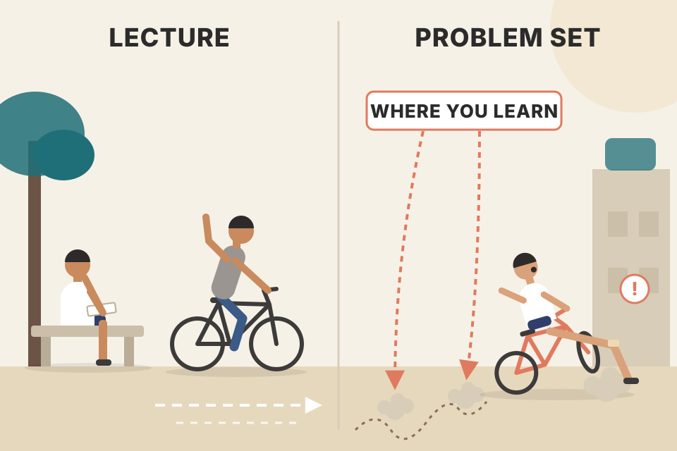
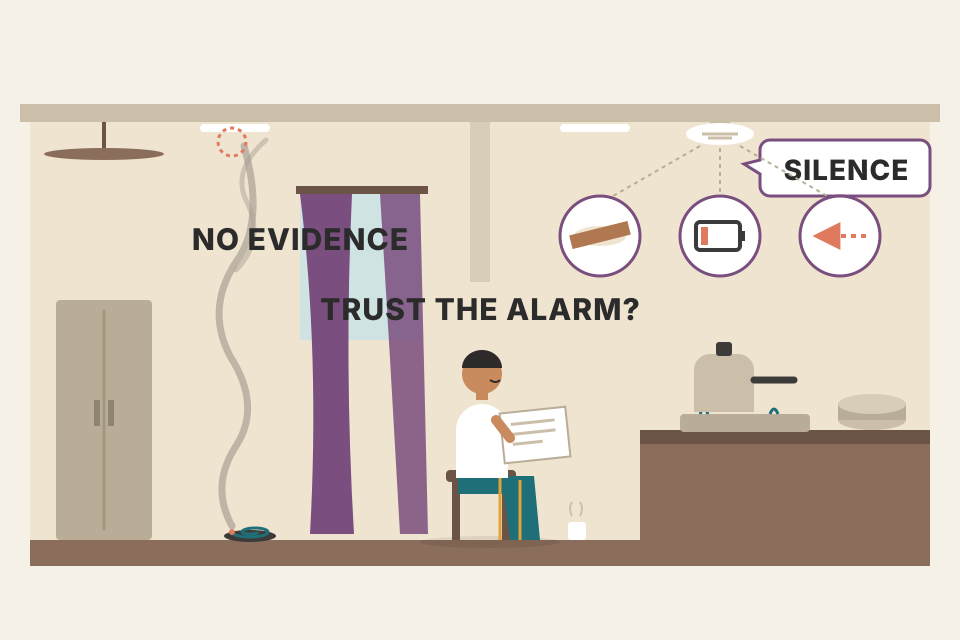

The front pages of the workbook are short, but they explain what you're holding: a homework book for a free course, a set of research papers, and a reading guide to a different book. This page walks through every piece of that front matter in the book's order: title pages, dedication, foreword, course catalog, reading plan and acknowledgments. Where an idea can be tried, there's something to click. Any price chart here uses simulated prices, made up to show one idea, never real market data.
Three things are tied together here: a free online course, this workbook, and Grimes's first book. The foreword tells you how they connect and gives you three ways to use the workbook. Keep this picture in mind; every plate below is one box.
The PDF in your library is called THE ART AND SCIENCE OF TECHNICAL ANALYSIS - PDF Room.pdf, but it's actually The Art and Science of Trading: Course Workbook (2017). The Art and Science of Technical Analysis (Wiley, 2012) is Grimes's first book, a separate book that isn't in your library. Everything below that mentions "the 2012 book" or "the reading plan" points to that other book.
978-1-948101-01-11-948101-01-7The copyright page says no part may be copied, stored or sent on in any form without written permission, except where sections 107 or 108 of the 1976 US Copyright Act allow it; permission requests go to the author by email. Then comes the standard disclaimer, in plain words:
It's the trading version of an open-source licence: the software is provided "as is", without warranty. You get the code (here: the methods and the evidence), and you carry the risk of running it in production (here: your own account).
An ISBN's last digit is a checksum, so a typo is usually caught. Both numbers on p2–3 check out. Try it, or type any ISBN:
ISBN-13 = the prefix 978 + the first nine digits of the ISBN-10 + a new check digit. Section 107 of the US Copyright Act is the "fair use" section; 108 covers copying by libraries and archives. The 10…1 number line is a printer's key: the lowest number still printed is the printing, so 1 means first printing.
Notes/trading/trading_equations.md covers Black–Scholes–Merton as formula 13.The book is dedicated to its readers. Grimes says their support moved him, their dedication and persistence inspired him, and their questions pushed him and taught him a great deal. He says he's honoured to be part of their journey, and thanks them.
Under the dedication sits one line from John Wooden: "It's what you learn after you know it all that counts."
The moment you can name every chart pattern is roughly where real learning starts: knowing the vocabulary is the entry ticket, not the skill.
The quote sets the tone for the whole workbook: it's built from questions readers asked, and its research part keeps saying that the answers are never final. Wooden (not in the book: the long-time UCLA basketball coach) is a teacher, which fits a book that's really a course.
The foreword (headed "Forward (and how to use this book)" in the PDF) opens by warning that this isn't a typical trading book, and that you'll use it best if you know a few things about it first.
It's a companion to two things: the trading course The Art and Science of Trading, which in 2017 was free at MarketLife.com, and Grimes's first book, The Art and Science of Technical Analysis: Market Structure, Price Action, and Trading Strategies (2012). Its content falls into four groups. Click one to see where it lives in the workbook:
A university module: lectures (the online course), a textbook (the 2012 book), a problem set with extra readings (Part I of this workbook), the professor's research papers (Part II), and a syllabus that says which textbook pages go with which lecture (the reading plan).
The workbook isn't meant to be read on its own like a normal book. Its job is to make you do things (exercises), show you how the author thinks day to day (blog posts), back up the style with numbers (whitepapers), and route you through the textbook (reading plan). The foreword now explains each group in turn, and sections 04–06 follow that order.
Grimes says one reason trading is hard to learn is that there has never been a solid curriculum for building technical trading skills. The exercises here have, in his words, proved effective over years of teaching and coaching. What they cover:
He thinks traders at every stage will find something useful, and many will get a base for a lifetime of trading. Two pieces of advice close this part: developing traders usually lack perspective on market history, so time spent studying historical examples deeply is well spent; and don't judge by page count, because some of the most important exercises take only one or two pages.
A bar is a zip file. Open, high, low and close are the summary; the path the price took inside the bar is compressed away. A weekly bar zips five daily bars, and a monthly bar zips about twenty. Reading charts from small to large means learning what each level of compression keeps and what it throws away.
Building a bigger bar is a fold over the smaller ones: open = first open, high = max of highs, low = min of lows, close = last close. That fold throws away the order of events. In daily mode the lower panel draws one made-up path that fits the day's four prices; press "Another possible path" and a different path fits just as well. The bar alone can't tell you whether the high came before the low, which is exactly what "reading inside the bar" tries to work out from the bar's shape and its neighbours. (Simulated prices; the path drawing is my illustration.)
Weather vs climate. One decade is weather: it can be wonderful or awful. Grimes's century of Dow charts is the climate record; you can't tell what's normal from one decade, however vivid.
Model the index as a random walk in log price with yearly drift μ and volatility σ (my assumption, not Grimes's). A decade's log return is then roughly normal with mean 10(μ − σ²/2) and spread σ√10. With μ = 7% and σ = 18%: mean = 10 × (0.07 − 0.0162) = 0.538, spread = 0.18 × 3.162 = 0.569. A losing decade needs a log return below 0, which is 0.538 / 0.569 ≈ 0.95 spreads below the mean: about a 17% chance. So even with a steady 7% drift, roughly one decade in six goes nowhere or down. The readout above checks this formula against 300 simulated centuries.
Every decade in the simulation has exactly the same rules, yet the decade bars swing from big gains to losses. A trader who learned only on one great decade would think that's normal. That's the point of studying long history: to see the full range of what "normal" includes before your own money finds out.
Notes/trading/backtest_results_summary.md the 1-hour strategies were "great in the 2023–24 rally, flat/negative in 2025–26". Two years is one weather pattern.Grimes has blogged and written regularly in several formats for about ten years. The workbook collects selected posts that shed light on each topic. He kept their casual, informal tone; they're only lightly edited to fit the book, and most keep their original graphics, which are sometimes lower quality than a book would usually have.
He admits he worried about republishing things he'd already shared. The worry faded as he saw how well the posts helped students as they learned. And a blog's strength is also its weakness: it's a living thing. Readers focus on what's current, so older posts get overlooked. The book was a chance to gather those older posts and tie them to the big concepts.
A busy chat channel vs a documentation page. In the channel, a great answer from three years ago is effectively gone; once someone copies it into the docs under the right heading, people find it again.
Same records, different primary key. A blog is indexed by date, so attention goes to the newest few posts (faded chips above). The workbook re-indexes the same posts by topic, so a post from years ago sits right next to the exercise it explains. (The chips are an illustration: made-up years and topics, not his real post list.) The reading plan in section 12 does the same thing to the 2012 book.
Notes/ repo follows the same rule: its AGENTS.md says every note goes into a folder per topic.The whitepapers in Part II had never been published in full before, though some of their findings appeared in his talks and blog posts over the years. They're examples of how to apply quantitative techniques to market data. Grimes hopes they get across the nuance of this work and the need for humility: we never have firm, final answers to most of these questions, and there's always another way to look at the problem. The last chapter of the section gives solid examples of quantitative tendencies that support the trading style of his first book and the course.
Note: the PDF has no "Part II" divider page. I'm treating Ch.10–16 as Part II because the chapter list switches from course modules (Ch.1–9) to research topics at Ch.10 (pdf p385), and Ch.16 is the last chapter before the back matter.
A lab notebook, not a sales brochure. A brochure says "this works". A lab notebook says "here is what I tried, how I measured it, what I saw, and what could be wrong with my measurement".
"Humility" has a precise meaning in statistics: every result is an estimate with an error bar, and it depends on the test's design (which markets, which years, which rules). Change the design and the number moves. Section 10 lets you watch that happen.
Notes/trading/backtest_results_summary.md): opening range breakout on NSE (Ch.15: the 15-min version failed the Nifty 200 re-check, the 5-min version is "a lead to paper trade, not proven"); MACD crossover, which is built from moving averages (Ch.14: "not worth trading anywhere"); and test design (Ch.12: you chose parameters on earlier data and judged them on later data).Any book can be read cover to cover, and Grimes says that may be a good way to get to know what's in this one. After that first pass, he suggests three ways to use it, depending on your experience and goals. Pick the one closest to you:
A reference manual: skim it end to end once so you know what exists, then come back through the index for the part you need.
The three routes match the book's three parts: Part I chapters line up with course modules (route 1), the reading plan lines up with the 2012 book (route 2), and Part II stands alone (route 3). The next three plates take each route in the book's order.
This is how the book began: as a set of PDF documents and charts made to extend the course. If you're taking the online course, use this book as your homework and work through the modules in order.
If you don't have the course material, you can still do many of the exercises. He tried to make the explanations useful on their own without repeating detail you don't need; some exercises stand alone better than others, but they work best alongside the course, as designed. The exercises come from many years of trading, teaching, thinking about markets and feedback from readers and traders he has worked with. He's firm that there are no filler or throwaway exercises: everything matters.

Lecture plus problem set. Watching someone ride a bike teaches you very little; the problem set is where you fall off and learn.
The module order matters because each skill sits on the last: chart reading comes before market structure, and structure comes before the four trade setups (modules IV–VII). Doing them in order, as he puts it, keeps those foundations under each new idea. The chapter names of Part I match the module names in the catalog (section 11) one for one.
You can also read The Art and Science of Technical Analysis (Wiley, 2012) with this workbook beside you, following the guided reading plan (section 12). Grimes notes that people who got the most out of that book usually read it more than once, took notes and made up exercises to help themselves understand it. The online course was originally meant as the book's companion: a structured way to work through it and make sure readers got everything out of it.
If you follow the topic-ordered reading plan, also look at the exercises that go with each part; some will appeal to you and give you good chances to deepen your understanding.
Reading code vs debugging it. You don't understand a codebase after one read; you understand it after you've traced a request through it, written a test, and come back a week later.
Each step forces a different kind of recall: notes make you restate, your own exercise makes you find the edge cases, the workbook exercise checks you against the author, and the second read catches what the first one skimmed. The section 12 calculator includes a "read it twice" switch for this reason.
books/trading/AGENTS.md), so this route isn't available from your library as it stands. Routes 1 and 3 work with what you have.The Part II whitepapers can be read on their own, in the order given. They'll challenge some tools that many technical traders have always used. Grimes stresses that the papers aren't trying to disprove anything; scientific inquiry doesn't think in those terms. They look for evidence that these tools, which are claimed to be very powerful, give a statistical edge in the market.
In his studies, these tools don't show an edge. He lists four possible reasons:
The test asked the wrong question, or asked it too weakly (e.g. too few trades).
Errors or hidden bias in the price history.
The edge is real but only appears in a setting the test didn't isolate.
The tool just doesn't have one.
Whatever the reason, the papers give you perspective on the problems of technical trading and may point you to new directions for your own research. The foreword ends hoping you find the material interesting, useful and fun, and wishing you success; it's signed Adam Grimes, New York, October 2017.

A smoke alarm that stays silent. Maybe there's no fire. Or the alarm is in the wrong room, its battery is weak, or it's been taped over. Silence only means "no fire" if you trust the alarm.
Each "test" below is a backtest of a made-up tool on simulated trades. Every trade wins +1R or loses −1R; the tool's true edge is the average R per trade (expectancy, formula 1 in your trading_equations.md). 500 independent tests are run and pooled; each one says "edge found" if its t-statistic is above 2. Nothing here is Grimes's data or real market results.
For ±1R trades the spread of one trade's result is about 1R, so a test of n trades measures the edge with a standard error of about 1/√n. With n = 170: 1/√170 ≈ 0.077R. To clear t = 2 the measured edge must be above about 2 × 0.077 ≈ 0.15R per trade. A real 0.10R edge (a very good edge) is caught only about one time in four (26% in the simulation at these settings). To halve the error bar you need four times the trades: 680.
This is hypothesis testing. The starting assumption ("null") is "no edge". A test can reject it (evidence of an edge) or fail to reject it. Failing to reject is not proof of no edge: it can also mean the test was too weak (low power), the data was biased, or the edge was diluted. That's why Grimes says "don't show an edge" and lists four reasons, instead of saying "disproved".
Notes/trading/backtest_results_summary.md). That's reason 1 handled correctly. Your trades aren't simple ±1R bets, so treat the 0.15R figure above as a rough guide only.A list of the modules and units of the online course, which the book says is free at MarketLife.com. There are nine modules, numbered I–IX, and each workbook chapter 1–9 has the same name as its module. Pick a module to see its units, its workbook chapter, and the reading-plan pages for it:
A syllabus that climbs: read a chart → understand its structure → trade four setups → handle failure, sizing and risk → manage your own mind.
Look at the units, not just the module names. Every setup module also carries a research or process skill: expected value, record keeping and manual backtesting with the pullback; quantitative techniques, cognitive biases and system design with the anti; trading stats, papertrading and a research journal with the failure test; trade management and a trading plan with the breakout. The course teaches a setup and the habit of measuring it together.
Notes/trading/backtest_results_summary.md), so Module IV / Ch.4 is the one most tied to your own tests.The page numbers in this plan are pages of the 2012 Wiley book, not of the workbook. The plan has nine sections, one per course module (I–IX), and each lists page ranges with a short label. Each row below is one module; each bar is one range, placed by where it sits in the 2012 book. Pick a module to read its ranges as printed, or step through the whole plan in reading order.
Printed as the book has it, with two quirks: Module I lists "becoming a trader" twice, as 375–385 and again as 375–384, and some sections aren't in page order (Module III ends with 31–48; Module II lists 97–120 before 78–84 & 93–96).
A playlist reshuffled by mood instead of by album. Every song (page) is still there, but the order follows topics, so you jump back and forth through the album.
Add up the ranges as printed: I 52 pages (42 unique, because of the repeated range), II 60, III 78, IV 58, V 37, VI 37, VII 65, VIII 28, IX 29. That's 444 pages listed. Taken together they cover every page from 1 to 424 with no gaps, so the plan is the whole 2012 book re-ordered (up to p424) plus 20 repeated pages: 314–315 (pullback examples in IV and failure-test examples in VI), 353–359 (cognitive biases in V and the trader's mind in IX), 375–384 (twice in I) and 385 (I and IV).
| Module | Plan section | Ranges | Pages | Days |
|---|
The 2012 book is organised one way (its own chapter order); the course teaches in another (skill order). The plan is the mapping between the two, like a database view that joins the same pages under a different key. The step-through shows the cost: you keep jumping, for example from p359 straight to p409 in Module V. Doing each module's workbook exercises alongside (section 09) is what holds a topic together while the pages jump around.
Grimes says no creative work appears out of nowhere; it grows from contact with other thinkers, and this book owes more than most to its readers. Their questions (simple, deep or unanswerable) and their reactions (supportive, challenging or downright angry) pushed him forward. People wonder why he gives away so much free content; his honest answer is that he has probably gained from it as much as anyone.
| Who | What they did |
|---|---|
| Hannah Guerrero | Years-ago conversations about teaching a complete beginner to trade: the seed all the course material grew from. |
| Maria Tadros | Endless proofreads on a very tight schedule, and a constant supply of ideas and useful perspectives. |
| Tom Hansbury, Peter Lawless, Stewart Button | Critical thinking and careful edits. |
| Jose Palau | Helped him get from experience to theory and back again. |
| Betsy, his wife | Support; looking at cover drafts that differed by a few millimetres; putting up with debates over colour #0947D5 vs #0945D4 (he says he only slightly exaggerates); letting him vanish for days to write. |
| Every reader | Helped create the work; he couldn't have done it without them. |
Two backtests whose returns differ in the second decimal place. You can argue about which is "better" for an hour, and the data can't tell them apart.
Each colour is three numbers from 0 to 255 (red, green, blue). These two differ by 2 in green and 1 in blue, under 1% of the scale, which most people can't see even with the swatches touching. A joke, but a useful one for this book: a difference smaller than the noise isn't a difference you can act on. (The RGB arithmetic is mine, not the book's.)
No. It's The Art and Science of Trading: Course Workbook (Hunter Hudson Press, 2017). The Art and Science of Technical Analysis is Grimes's first book (Wiley, 2012), a different book that the reading plan points into (map, sections 01, 12).
Course exercises and collected blog posts (Part I, Ch.1–9), whitepapers (Part II, Ch.10–16), and a reading plan for the 2012 book (front pages, pdf p11–12) (section 03).
No, and he says so. The papers look for evidence of an edge rather than trying to disprove anything. No edge showing up could mean flawed tests, flawed data, a method that missed something, or genuinely no edge (section 10).
Very little. The standard error is about 1/√170 ≈ 0.077R, so t ≈ 1. The result fits a zero edge and also a real 0.15R edge. You'd need about four times the trades to halve the error bar (section 10, beyond the book).
More trades shrink random error (as 1/√n) but not bias. The error bar narrows around the wrong value, so the test grows more confident in a fake edge. Only better data or a control test fixes it (section 10).
Ch.6 (Failure Test), Section 4, from pdf p214: weekly charts, mostly one decade each with a performance summary and major events marked, plus mid-decade snapshots for the 1929 and 1987 crashes (section 04).
No. Building a bigger bar keeps first open, max high, min low and last close, and throws away the order. Many different paths make the same bar (section 04, "Another possible path").
Some of the most important exercises take only one or two pages; spending time deeply on them, especially historical examples, matters more than how long they look (section 04).
A blog is a living thing: readers chase what's current and older posts get overlooked. The book collects them and ties them to the big concepts, and he saw how well they helped students (section 05).
IV The Pullback, V The Anti, VI The Failure Test, VII The Breakout. The pullback module also covers expected value, quantitative techniques, record keeping and manual backtesting (section 11).
Twenty pages repeat: 375–384 is listed twice in Module I, 385 appears in I and IV, 314–315 in IV and VI, 353–359 in V and IX. Unique pages = 424, and they cover pp. 1–424 of the 2012 book with no gaps (section 12).
Hannah Guerrero's, from years earlier, about how to teach a complete beginner to trade (section 13).